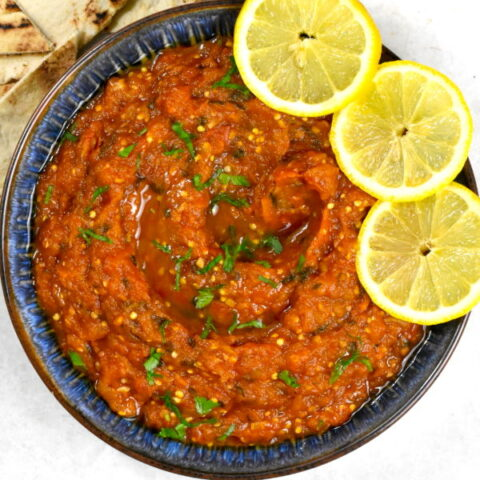

How to Make Zaalouk

Let's make your new favorite eggplant dish!
Ingredients
- 1 eggplant, peeled and cubed
- 3 Roma tomatoes, peeled, desseded, and cored
- 4 garlic cloves, smashed
- 1/3 cup chopped parsley
- 1/4 cup olive oil
- 1 teaspoon coriander
- 1/2 teaspoon cumin seed
- 1/2 teaspoon sannam chili or chili powder
- 2 teaspoons sea salt
- 1/3 cup water
- 1 tablespoon tomato paste
- 1/2 lemon, juiced
- olive oil, for garnish
- olives, for garnish
- lemon, for garnish
- parsley, for garnish
Steps
- In a pot, add the eggplant, tomatoes, garlic, parsley, oil, spices, and water. Bring to a simmer and cook, covered, for 10-25 minutes. Stir continuously, allowing the eggplant and tomatoes to mesh together into a dip consistency.
- Once softened, use a wooden spoon to mash the contents of the pan into a dip consistency.
- Add tomato paste and lemon juice. Stir and season with salt and pepper.
- Simmer, uncovered, for another 10 minutes. The dip is ready to be served when it can coat the wooden spoon.
- Plate. Drizzle olive oil and garnish with olives, lemon wedges, and chopped parsley. Enjoy!
This recipe was originally written by Nasim Lahbichi and can be found at Lahb Co. Please check out his website and other recipes and leave him a good review if you love this zaalouk recipe as much as I do!